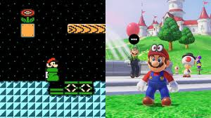

2D vs 3D Game Development
2D and 3D games differ in how they are displayed and played. 2D games are flat and usually simpler to create, while 3D games add depth and more realistic movement. The choice between 2D and 3D depends on the game idea, budget, and desired player experience.
